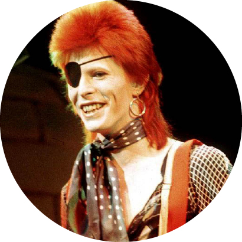

Halloween Jack

Diamond Dogs is the eighth studio album by the English musician David Bowie, released on 24 May 1974 by RCA Records. Thematically, it was a marriage of the novel Nineteen Eighty-Four by George Orwell and Bowie's own glam-tinged vision of a post-apocalyptic world. Bowie had wanted to make a theatrical production of Orwell's book and began writing material after completing sessions for his 1973 album Pin Ups, but the author's estate denied the rights. The songs wound up on the second half of Diamond Dogs instead where, as the titles indicated, the Nineteen Eighty-Four theme was prominent. The album is ranked number 995 in All-Time Top 1000 Albums (3rd. edition, 2000) and number 447 in NME's The 500 Greatest Albums of All Time.
Though the album was recorded and released after the 'retirement' of Ziggy Stardust in mid-1973, and featured its own lead character in Halloween Jack ("a real cool cat" who lives in the decaying "Hunger City"), Ziggy was seen to be still very much alive in Diamond Dogs, as evident from Bowie's haircut on the cover and the glam-trash style of the first single "Rebel Rebel". As was the case with some songs on Aladdin Sane, the influence of the Rolling Stones was also evident, particularly in the chugging title-track. Elsewhere, however, Bowie had moved on from his earlier work with the epic song suite, "Sweet Thing"/"Candidate"/"Sweet Thing (Reprise)", whilst "Rock 'n' Roll with Me" and the Shaft-inspired wah-wah guitar style of "1984" provided a foretaste of Bowie's next, 'plastic soul', phase. The original vinyl album ended with a juddering refrain Bruh/bruh/bruh/bruh/bruh, the first syllable of "(Big) Brother", repeats incessantly. "Sweet Thing" was Bowie's first try at William S. Burroughs' cut-up style of writing, which Bowie would continue to use for the next 25 years.
Although Diamond Dogs was the first Bowie album since 1969 to not feature any of the Spiders from Mars, the backing band made famous by Ziggy Stardust, many of the arrangements were already worked out and played on tour with Mick Ronson prior to the studio recordings, including "1984" and "Rebel Rebel". In the studio, however, Herbie Flowers played bass with drums being shared between Aynsley Dunbar and Tony Newman. In a move that surprised some commentators, Bowie himself took on the lead guitar role previously held by Ronson, producing what NME critics Roy Carr and Charles Shaar Murray described as a "scratchy, raucous, semi-amateurish sound that gave the album much of its characteristic flavour". Diamond Dogs was also a milestone in Bowie's career as it reunited him with Tony Visconti, who provided string arrangements and helped mix the album at his own studio in London. Visconti would go on to co-produce much of Bowie's work for the rest of the decade.